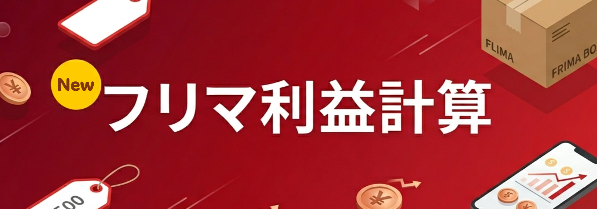

かつてSURGE PROと呼ばれたツールは、
よりスマートに、より強力に進化を遂げました。

メルカリ、Yahoo!フリマ、ラクマに対応。手数料の計算から配送方法の選択まで、テクスタなら1タップで完結します。全角数字の自動変換など、日本のクリエイターに嬉しい機能を凝縮。
アイデアを逃さない。自動保存対応のテキストエリア。さらにその下には各ツールへのショートカットを完備し、作業のハブとして機能します。
エンジニア・ライター必須のツール。不純なスペースや全角英数字を、一瞬でクリーンな半角データへと変換します。
YouTubeの概要欄やブログ記事の作成に。空白を含む・含まないの切り替えも自由自在です。
「技術（Tech）をあなたの標準（Standard）に、そして星（Star）のように輝く体験を」
SURGEの開発者が贈る、次世代のツールプラットフォーム。
登録不要・無料で今すぐ利用可能